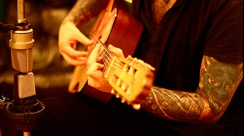
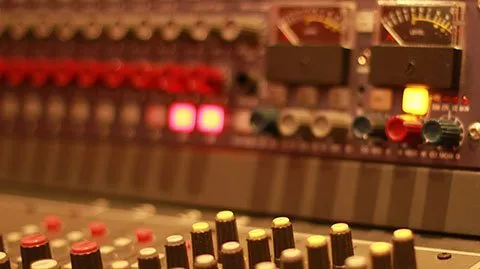

¿Quienes somos?
GRABACIÓN Y MEZCLA Contamos con todo lo necesario para ofrecerte el mejor resultado. Desde el lado técnico, con equipamiento de alta gama, hasta el aspecto humano, donde nuestro compromiso nos destaca.
MASTERING Además del típico método stereo, te ofrecemos la posibilidad de masterizar por stems, pasando tus pistas por nuestra Neve 8816, realzando cada parte de tu mezcla. Realizamos además mastering para todas las plataformas de streaming.
 
Servicios y materiales que proporcionamos
PREAMPLIFICACION: Avalon 737SP (valvular / class A) (3 unidades) TL Audio EQ2 (valvular stereo) Focusrite ISA 428 (2 unidades - 8 preamplificadores) DBX 376 DS Audio 272 (circuito Neve 1272) DS Audio 3012 (circuito API 312) (2 unidades) Sony SRP (24 canales de grabación) UAD Apollo (6 preamps con Unison)
MAIN CONTROL: Mesa Sony SRP V324 (32 canales) Neve 8816 Summing Mixer (16 canales, England) Euphonix Artist Mix + Control (faders automatizados)
ENTORNO: Pro Tools Studio 2022 Pro Tools HD III (TDM) v10.3.10 Digidesign 192 I/O Digidesign 96 I/O 16 ins + 24 outs simultáneos UAD Apollo Firewire Quad UAD Apollo Twin Duo UAD2 Satellite Quad (x2) Apple Mac Pro
GEAR: Teletronix LA2A Optocompresor TL Audio EQ2 Ecualizador parametrico valvular Orban 622B Ecualizador parametrico Avalon vt737SP Channel strip (matched par) Avalon vt737sp Channel strip (total 3) Avalon 747 Unidad de compresion y ecualizacion stereo Avalon AD2044, Opto compresor stereo / dual mono Aphex Aural Exciter 104 Type C2 Urei 1176LN, FET compresor (Universal Audio) Urei 546 Ecualizador parametrico stereo / dual mono DBX 376 Channel Strip DBX 266XL Compresor / Gate DS Audio 176m compresor Lexicon MPX100 Reverb Lexicon Alex Reverb Applied Research & Technology Pro VLAII Compresor Ibanez DM1100 Delay Alesis 3630 Compresor vca DAT Sony Yamaha SPX90 Multi FX Yamaha GEP50 Multi FX Boss GE131 EQ 1/3 Oct. (x2) tascam DA-20 MK2 (DAT) Alesis DM5 (Drum Trigger) Alesis 3630 Compresor
MONITOREO: Focal Twin6 Be Dynaudio BM5A JBL serie 4208
AURICULARES: Focal Spirit Professional (x1) Audio-technica Ath-m50 (x1) Beyerdynamic DT990 Pro (x1) Beyerdynamic DT880 Pro (x1) Beyerdynamic DT100 (x2) Sennheiser HD650 (x1) Sennheiser HD265 (x1) Sennheiser HD25 (x1) Sennheiser HD202 (x8) AKG K100 (x1) AKG K55 (x1)
MICROFONOS CONDENSER: Neumann U87 (x1) Neumann TLM103 (x1) AKG 414 XLS (x1) Shure SM81 (x2) AKG C3000 (x1) Oktava MK319 (x1) Audiotechnica AT4033 (x1) Audiotechnica AT2020 (x2) Rode NT1A (x2) par apareado CAD GXL3000 (x1)
MICROFONOS DINAMICOS: Sennheiser Md421 (x3) AKG D112 (x1) Audix D6 (x1) Audix i5 (x1) Audix F10 (x1) Audix F12 (x3) Electro-Voice ND468 (x1) Electro-Voice RE 16 (x1) Shure SM 57 (x4) Shure SM 58 (x2) Audiotechnica Pro 25 (x1)
MICROFONOS RIBBON: Cascade Fat Head (x2) par apareado
MISCELANEA: Bateria Ludwig, 5 cuerpos Reamp Radial DI Horizon (x2) Teclados controladores Kawai y M-Audio
EQUIPOS DE GUITARRA: Vox AC15 Fender M80
AMPLIFICADORES VIRTUALES: LINE 6 X3 PRO UAD Marshall Bluesbreaker 1962 UAD Marshall Plexi Super Lead 1959 UAD Marshall Silver Jubilee UAD Ampeg SVT-VR Bass Amplifier UAD Ampeg SVT-3 PRO Bass Amplifier UAD ENGL UAD Friedman Amplifiers UAD Chandler Limited GAV19T Amplifier
UAD Unison Channel Strips: Neve 88RS Neve 1073 API Vision UA 610 Tube Preamp & EQ